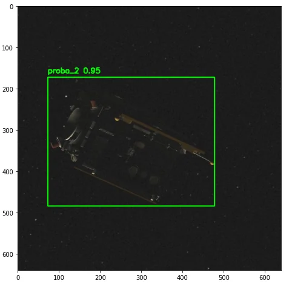

A Comprehensive Machine Learning Paradigm for Space Debris Surveillance
three machine learning models that find debris, predict its orbit and assess collision risk, and a space based laser design for debris removal
- project
- 01 of 05
- event
- ISEF, 4th in Physics & Astronomy
- credit
- Research project with one partner, Nived Nandakumar. published on SSRN.
- links
- Read the paper →
01the problem
- millions of fragments from old rockets and dead satellites now orbit Earth
- Kessler syndrome is the runaway case, where each collision creates debris that causes the next
- ground telescopes only track the larger pieces and the atmosphere distorts what they see
- no system has actually removed debris, only proposals and planned missions

02model one, detection
- convolutional neural network trained on over 5,000 labeled orbital images
- multi task loss combining classification, localization and confidence
- anchor boxes refined against ground truth by minimizing intersection over union
- random scaling, rotation and flipping to make it generalize

03model two, trajectory
- physics informed neural network with an LSTM layer reading trajectory history
- Kepler's third law, eccentricity limits, drag and gravity all enforced as loss terms
- a plain network drifts into orbits that cannot physically exist, the constraints stop that
- time derivatives modeled with gradient tape so predictions stay smooth

04model three, collision risk
- random forest regressor, 100 decision trees on bootstrapped samples
- works from relative speed, distance and approach angle
- risk predicted on a log base 2 scale for resolution at low probabilities
- averaging decorrelated trees cuts variance, which the formula makes explicit
05the laser application
- the three models feed a proposed satellite carrying a pulsed laser
- focused heat vaporizes a thin surface layer, which is ablation
- the plasma plume pushes the fragment onto a lower orbit until it burns up
- more precise than any ground based attempt because the platform is already alongside
06results
- detection reached 95.4 percent mean average precision, 98.0 percent on recall confidence
- trajectory model reached R squared 0.979 with mean squared error 0.015
- collision risk model reached R squared 0.981 with mean squared error 0.014
- all three run behind one interface, upload an image and get object, orbit and risk together